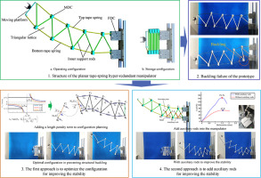
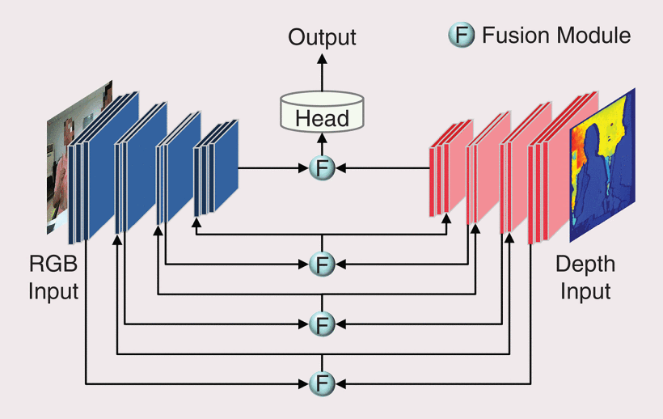
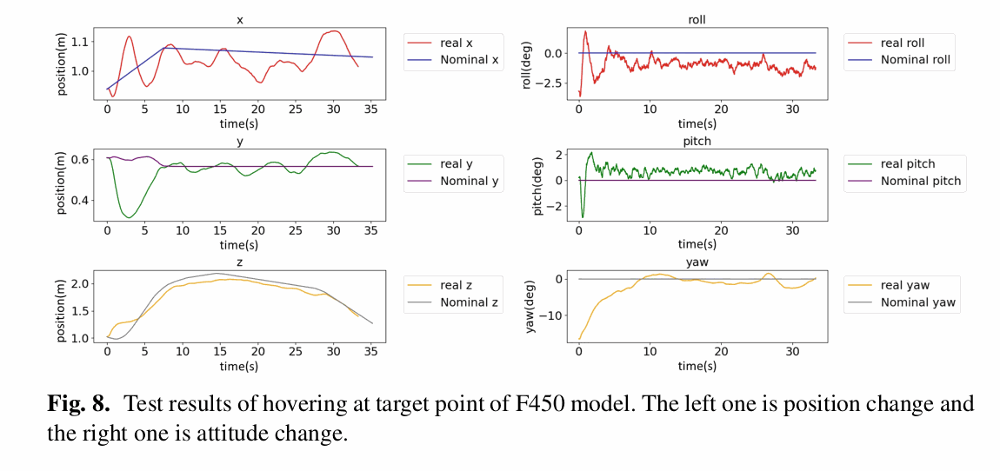
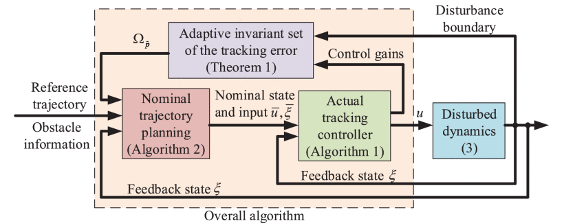
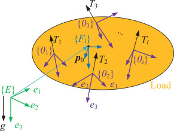
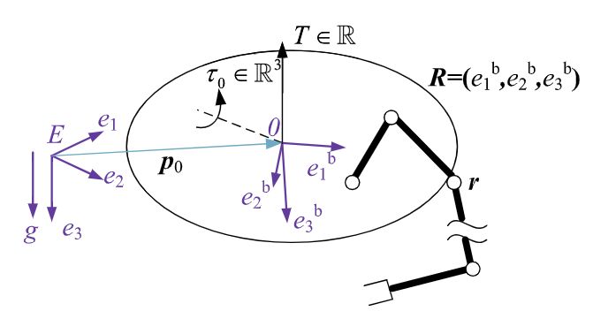

Dr. Yushu Yu is an Associate Professor with the School of
Mechatronical Engineering at the Beijing Institute of
Technology. He was a Research Fellow at Nanyang
Technological University, Singapore, and at Chalmers
University of Technology, Sweden, where he worked on
control for aerial systems and autonomous driving. Yushu
received his Ph.D. and B.Eng. degrees in Mechanical
Engineering from Beihang University, China. He has
published more than 70 journal and conference papers,
including IEEE TRO, ITS, TMech, RAL, MMT, and ICRA. He is
the recipient of several best conference paper awards and
the Excellent Ph.D. Dissertation Award of Beihang
University. He currently serves as an Associate Editor for
IEEE TRO and ICRA, the flagship journal and conference in
the robotics community. He has also developed a variety of
aerial robotic systems with applications in infrastructure
inspection and surveillance.
Dr. Yu’s long-term research goal is to achieve embodied intelligence for unmanned aerial systems, particularly for physical interaction.
His research focuses on control, perception, and learning for aerial robots, particularly in scenarios involving physical interaction, multi-vehicle cooperation, and complex environments. He is passionate about robotics, unmanned aerial vehicles, and embodied AI. His interests also include optimization-based control, multimodal perception, and their integration into full-stack aerial autonomy. He enjoys building flying platforms, testing algorithms in real-world environments, and exploring new forms of aerial physical interaction.
Prospective students and post-doc researchers
We are always looking for candidates with strong self-motivation,
a solid interest in aerial robotic systems, and a passion
for combining artificial intelligence with real-world
robotics. Prospective students and postdoctoral
researchers will have opportunities to work on
cutting-edge topics in embodied intelligence for aerial
robots.
For prospective students: If you are interested in joining
our group as a Master’s student, Ph.D. student, or
internship student, please feel free to contact me with
your CV and a brief description of your background and
research interests.
For post-doc researchers: We welcome applicants with
expertise in robotics, control, machine learning, or
related areas. Please email me to discuss available
opportunities.
Sep 2025
I was invited to serve as an Associate Editor (AE) for
IEEE Transactions on Robotics.
Sep 2025
Our paper “NMPC-Based Trajectory Optimization and
Hierarchical Control of a Ducted Fan Flying Robot with
a Robotic Arm” was accepted by Drones.
Sep 2025
Our paper “Real-Time Human–Drone Interaction via
Active Multimodal Gesture Recognition under Limited
Field of View in Indoor Environments” was accepted by
IEEE Robotics and Automation Letters.
August 2025
Our paper “Optimal Design of Integrated Aerial
Platforms with Passive Joints” was accepted by
IEEE Robotics and Automation Letters.
August 2025
Our paper “Incremental Nonlinear Model Predictive
Control for Aircraft Attitude Tracking” was accepted
by Journal of Aerospace Engineering.
August 2025
Our paper “Differential Flatness-Based
Singularity-Free Control of a Class of 5-DOF Aerial
Platforms with Applications to Passively Articulated
Dual-UAV Systems” was accepted by Drones.
July 2025
Our paper “Tight Fusion of Odometry, Kinematic
Constraints, and UWB Ranging Systems for State
Estimation of Integrated Aerial Platforms” was
accepted by
IEEE Transactions on Automation Science and
Engineering.
June 2025
Our paper “Variable Admittance Control via
Reinforcement Learning: Enhancing UAV Interactions
Across Diverse Platforms” was accepted by
Neurocomputing.
May 2025
Our paper “Versatile Tasks on Integrated Aerial
Platforms Using Only Onboard Sensors: Control,
Estimation, and Validation” was accepted by
IEEE Transactions on Robotics.
April 2025
Our paper “High-Fidelity Integrated Aerial Platform
Simulation for Control, Perception, and Learning” was
accepted by
IEEE Transactions on Automation Science and
Engineering.
Febrary 2025
Our paper “Efficiently
Kinematic-Constraint-Coupled State Estimation for
Integrated Aerial Platforms in GPS-Denied
Environments” was accepted by
IEEE Robotics and Automation Letters.
Experience
Associate Professor, Beijing Institute
of Technology (BIT), China, 2019 - Present
Postdoctoral Researcher, Chalmers
University of Technology, Sweden, 2017 - 2019
Tight Fusion of Odometry, Kinematic Constraints, and UWB
Ranging Systems for State Estimation of Integrated Aerial
Platforms
Yushu Yu*, Yingjun Fan,
Ganghua Lai, Chuanbeibei Shi,
Fuchun Sun, Xin Meng,
IEEE Transactions on Automation Science and
Engineering(TASE) 2025 [PDF]
Variable admittance control via reinforcement learning:
Enhancing UAV interactions across diverse platforms Yuting Feng , Tao Yang,
Kaidi Wang , Jiali Sun ,
Yushu Yu* ,
Neurocomputing 2025 [PDF]
High-Fidelity Integrated Aerial Platform Simulation for
Control, Perception, and Learning Jianrui Du, Kaidi Wang, Yiming Fan,
Ganghua Lai, Yushu Yu IEEE Transactions on Automation Science and Engineering
(TASE) 2025 [PDF]
Efficiently Kinematic-Constraint-Coupled State Estimation
for Integrated Aerial Platforms in GPS-Denied
Environments Ganghua Lai, Yushu Yu,
Fuchun Sun, Jiaxin Qi,
Vincenzo Lippiello IEEE Robotics and Automation Letters (RA-L) 2025 [PDF]

Improving the Stability of a Planar Tape-Spring
Hyper-Redundant Manipulator Yushu Yu, Hu Liu,
Tonghuan Ding, Yi Yang Mechatronics, vol. 101, 103193, 2024 [PDF]

Dynamic Importance-Weighted Fusion Network Based on Dynamic Convolutions for Hand Posture Recognition: A Technique Based on Red, Green, Blue Plus Depth Cameras
Jing Qi, Li Ma,
Yushu Yu IEEE Robotics & Automation Magazine [PDF]
Real-Time Multi-Modal Active Vision for Object Detection
on UAVs Equipped With Limited Field of View LiDAR and
Camera Chuanbeibei Shi, Ganghua Lai,
Yushu Yu, Mauro Bellone,
Vincezo Lippiello IEEE Robotics and Automation Letters (RA-L), 2023 [PDF]

Zero-Shot Sim-To-Real Transfer of Robust and Generic
Quadrotor Controller by Deep Reinforcement Learning Meina Zhang, Mingyang Li, Kaidi Wang,
Tao Yang, Yuting Feng,
Yushu Yu International Conference on Cognitive Systems and Signal
Processing (ICCSSP), 2023 [PDF]
Enhancing UAV Aerial Docking: A Hybrid Approach
Combining Offline and Online Reinforcement Learning Yuting Feng, Tao Yang,
Yushu Yu Drones, vol. 8, no. 5, 168, 2024 [PDF]
Variable Admittance Interaction Control of UAVs via Deep
Reinforcement Learning Yuting Feng, Chuanbeibei Shi,
Jianrui Du, Yushu Yu,
Fuchun Sun, Yifan Song IEEE International Conference on Robotics and Automation
(ICRA), 2023, pp. 1291–1297 [PDF]
Constrained Control for Systems on Matrix Lie Groups with
Uncertainties Chuanbeibei Shi, Yushu Yu,
Yuwei Ma, Dong Eui Chang International Journal of Robust and Nonlinear Control
(IJRNC) [PDF]

Formally Robust and Safe Trajectory Planning and Tracking
for Autonomous Vehicles Yushu Yu, Dan Shan,
Ola Benderius, Christian Berger,
Yue Kang IEEE Transactions on Intelligent Transportation Systems
(T-ITS), 2022 [PDF]

A Hierarchical Control Scheme for Multiple Aerial Vehicle
Transportation Systems with Uncertainties and State/Input
Constraints Yushu Yu, Chuanbeibei Shi,
Dan Shan, Vincenzo Lippiello,
Yi Yang Applied Mathematical Modelling [PDF]
Two Types of Remote-Center-of-Motion Deployable
Manipulators with Dual Scissor-Like Mechanisms Yi Yang, Hu Liu, Huyong Zheng,
Yan Peng, Yushu Yu Mechanism and Machine Theory, vol. 160, 104274 [PDF]

Finite-Time Geometric Control for Underactuated Aerial
Manipulators with Unknown Disturbances Yushu Yu, Ping Li,
Peng Gong International Journal of Robust and Nonlinear Control
(IJRNC) [PDF]